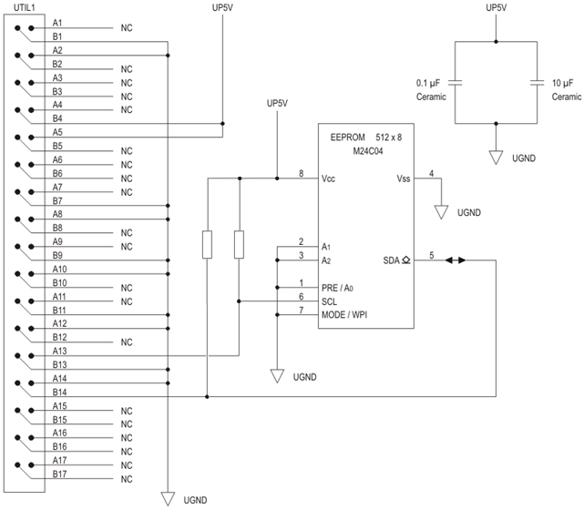

Utility lines and DUT board EEPROMs
You can identify your DUT board by reading out the EEPROMs mounted on the board. URW14 and URW15 on utility block 1 (UTIL 1) is used to address the EEPROMs.
EEPROMs are connected to the I2C bus and can be addressed individually:
- SmarTest 7: Firmware commands BDID, BDID? - (BoarD ID) and I2CA, I2CA? - (I2CA bus)
- SmarTest 8: IDutBoard interface of the Device Test API
Use one of the following EEPROMs:
- ST Microelectronics: M24C04-WMN6P
- Catalyst Semiconductor: CAT24C04W
| EEPROM | Pins of Utility block 1 | ||
|---|---|---|---|
| Pin | Signal name | Description | |
| 1 | NC | NC pin | not connected |
| 2 | A1 | Address input, to be connected to UGND or UP5V | UGND |
| 3 | A2 | UGND | |
| 4 | VSS | Ground | UGND |
| 5 | SDA | Serial data input/output | URW15 |
| 6 | SCL | Serial clock input | URW14 |
| 7 | MODE / WPI | Write control Write operations are enabled when this pin is either driven low or left floating. |
UGND |
| 8 | VCC | Supply voltage | UP5V |
A practical circuit diagram showing how to connect the utility lines to an EEPROM is shown below.

For mapping of the pins on utility block 1 refer to the appropriate test head / DUT interface combination listed in Utility line assignments or for HSM systems inUtility line assignments - HSM systems.
Generic EEPROM addressing
The table below shows generic EEPROM addressing on the I2C bus.
| Purpose | Address pin A1 | Address pin A2 |
|---|---|---|
| DUT Board EEPROM | A1 = 0 (Connect to UGND) | A2 = 0 (Connect to UGND) |
| DUT Interface EEPROM | A1 = 1 (Connect to UP5V) | A2 = 0 (Connect to UGND) |
| Free for Probe Card | A1 = 0 (Connect to UGND) | A2 = 1 (Connect to UP5V) |
| Free for another device | A1 = 1 (Connect to UP5V) | A2 = 1 (Connect to UP5V) |
Utility pin B9 on the large DUT interface of LTH
Pin B9 on utility blocks 2, 4, 6 and 8 on the large DUT interface is reserved and should be left floating, see Utility pogo block - LTH large DUT interface. If not observed, the slave wiring board EEPROMs will be read out incorrectly, resulting in incorrect information about these boards in the EDC Dump (Service Guide Part 1).
Functional changes
- Introduced before SmarTest 6.3.2